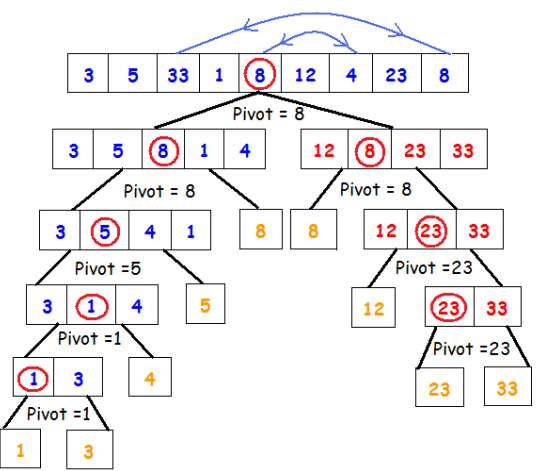

Quicksort
Definition
Quicksort is a sorting algorithm that was created by C. A. R. Hoare. It is a sorting algorithm that operates by recursively partitioning elements, which are to be sorted into two separate sets. Quicksort is based on the ‘divide and conquer’ principal.
Implementation
Quicksort works as follows:
- Select an element of the array to be a pivot.
- Divide the remaining elements into two partitions.
- Elements that are less than the pivot are to be placed in the first partition.
- Elements that are greater than the pivot are to be placed in the second partition.
- Sort both partitions recursively.
- Combine the following in order:
- The first(now sorted) partition.
- The pivot.
- The second(now sorted) partition.
Example
QuickSort
Functions
Quicksort is implemented by the following function:
- quick();
This function selects an element from the array, which is called the pivot. The remaining elements are compared from left to right until a greater element is located and the values are swapped. The same comparison technique is repeated from the right to left with the pivot. When a smaller element is located, the values are swapped. This process is repeated until all elements that are less than the pivot are positioned before the pivot and all the elements that are greater than the pivot are positioned after the pivot. Partitioning takes place and the function recursively sorts the sub-array’s of lesser and greater elements.
Pseudocode
function quick ( array arr, low, high ){
lo = low
hi = high
if lo is greater than hi
return
pivot = midpoint of arr
while lo is less than hi
while arr[lo] is less than pivot
increment lo
while arr[hi] is greater than pivot
decrement hi
if hi is less than lo
swap ( hi, lo )
quick ( arr, low, lo )
quick ( arr, if lo equals low then increment lo else lo, high )
Complexity
The optimal time complexity of Quicksort is O(N).
This is achieved by dividing the array into two sets that are nearly identical.
If the array contains n elements, then the first process will need O(N).
Sorting the remaining sub-arrays will result in the average time complexity of O(N Log N).
The worst case time complexity is O(N^2).
This arises if the sorting algorithm selects only one element in each iteration.
Advantages of Quicksort
Quicksort is one of the fastest algorithms to be used and is believed to be the best sorting algorithm.
This is due to the fact that it is capable of sorting a large list of items in a satisfactory amount of time.
Quicksort does not require additional memory as it is processes in-place (sorting within the array).
Developers regarded this as a huge beneficiary, in terms of memory storage.
Disadvantages of Quicksort
Quicksort’s worst-case time complexity contributes mainly to its disadvantages. Quicksort’s worst-case performance resembles the average performances of other sorts, such as selection sort, insertion sort and bubble sort.